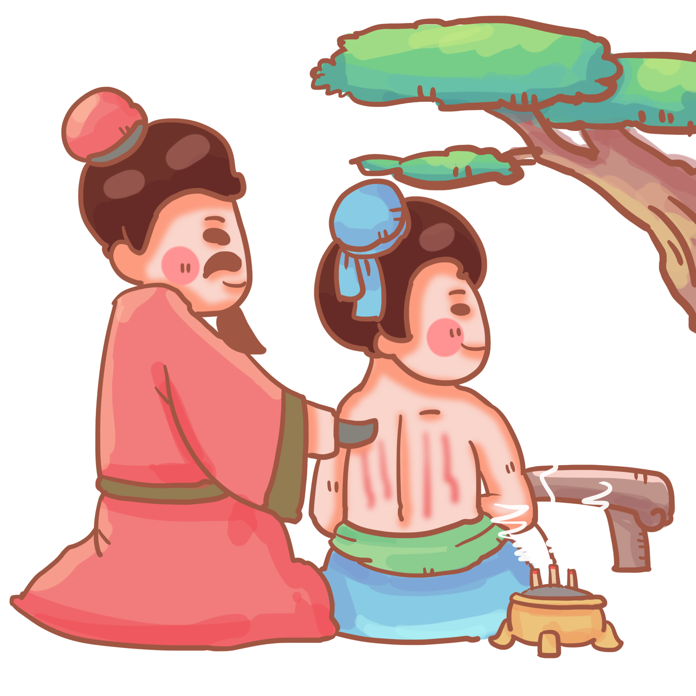
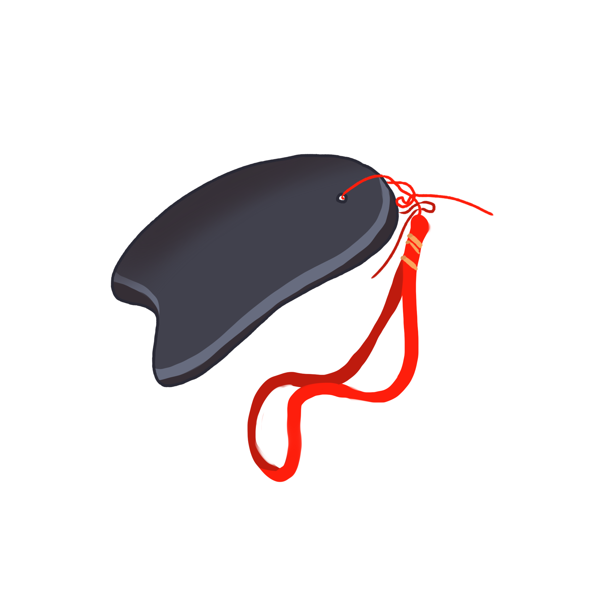

<!DOCTYPE html>
<html lang="en">
<head>
<meta charset="utf-8" />
<title>5489_202403041930</title>
<meta name="viewport" content="width=device-width, initial-scale=1, minimum-scale=1, maximum-scale=1" />
<script src="js/jquery-1.11.3.min.js"></script>
<script src="js/html2canvas.min.js"></script>
<style>
	@font-face {
		font-family: SourceHanSansCN-Heavy;
		src: url('css/font/SourceHanSansCN-Heavy.otf');
	}

	@font-face {
		font-family: SourceHanSansCN-Bold;
		src: url('css/font/SourceHanSansCN-Bold.otf');
	}

	@font-face {
		font-family: SourceHanSansCN-Regular;
		src: url('css/font/SourceHanSansCN-Regular.otf');
	}

	:root {
		--main-bdr-color: #000;
		--title-color: #b0d796;
		--title-stroke-color: #3e2308;
		--subtitle-color: #3c6421;
		--subtitle-bg-color: #fffde6;
		--text-color: #362e2b;
		--summary-color: #3c6421;
		--key-color: #eb6100;
		--key-bg-color: #000;
		--list-key-color: #3c6421;
		--list-circle-bdr-color: #000;
		--list-circle-bg-color: #f9ff58;
	}

	ul {
		padding: 0;
		margin: 0;

		li {
			padding: 0;
			margin: 0;
			list-style: none;
		}
	}

	p {
		margin: 0;
		padding: 0;
	}

	i {
		font-style: normal;
	}

	.bg {
		width: 1200px;
		height: 1600px;
		margin: auto;
		overflow: hidden;
		background: url(img/bg/bg_202403041930.jpg) center top no-repeat;
	}

	.content {
		width: 1000px;
		margin: 0px auto;
	}

	.title-wrap {
		padding-top: 65px;
		text-align: center;

		h1 {
			display: inline-block;
			position: relative;
			height: 80px;
			line-height: 80px;
			-webkit-text-stroke-width: 1.5px;
			-webkit-text-stroke-color: var(--title-stroke-color);
			text-shadow: #000 0 4px 0px;
			text-align: center;
			color: var(--title-color);
			font-size: 60px;
			font-family: SourceHanSansCN-Bold;

			&::before {
				position: absolute;
				top: 50%;
				left: -30px;
				content: '';
				/* width: 142px; */
				/* height: 222px; */
				width: 50px;
				height: 100px;
				transform: translateY(-50%);
				background: url(img/item/title_star_001.png) center center no-repeat;
				background-size: auto 100%;
			}

			&::after {
				position: absolute;
				top: 50%;
				right: -30px;
				content: '';
				/* width: 110px; */
				/* height: 213px; */
				width: 50px;
				height: 100px;
				transform: translateY(-50%);
				background: url(img/item/title_star_002.png) center center no-repeat;
				background-size: auto 100%;
			}
			
		}
	}

	.subtitle {
		display: table;
		position: relative;
		width: auto;
		height: 100px;
		line-height: 100px;
		margin: 20px 0 0;
		color: var(--subtitle-color);

		.right {
			position: relative;
			z-index: 2;
			float: left;
			color: var(--subtitle-color);
			font-size: 54px;
			font-family: SourceHanSansCN-Bold;
		}

		.line {
			position: absolute;
			left: 0;
			right: 0;
			bottom: 15px;
			z-index: 1;
			content: '';
			height: 25px;
			border-radius: 10px;
			background-color: rgba(163, 231, 117, 0.3);
		}
	}

	.text {
		line-height: 64px;
		/* line-height: 80px; */
		padding: 0px 30px 20px;
		margin-top: 0px;
		text-align: left;
		color: var(--text-color);
		font-size: 42px;
		font-family: SourceHanSansCN-Regular;

		i {
			color: var(--key-color);
		}

		b {
			font-weight: 700;
		}
	}

	.summary {
		position: relative;
		line-height: 72px;
		padding: 30px 100px;
		/* margin-top: 80px; */
		margin-top: 50px;
		border: 4px dashed var(--summary-color);
		border-radius: 20px;
		/* text-align: left; */
		text-align: center;
		color: var(--summary-color);
		font-size: 46px;
		font-family: SourceHanSansCN-Regular;
		/* background: url(img/item/border_001.png) center top no-repeat;
		background-size: 100% 100%; */

		&::before {
			position: absolute;
			left: 50px;
			top: 80px;
			content: '';
			width: 46px;
			height: 46px;
			background: url(img/item/icon_start_001.png) center no-repeat;
			background-size: 100%;
		}

		&::after {
			position: absolute;
			right: 50px;
			bottom: 70px;
			content: '';
			width: 46px;
			height: 46px;
			background: url(img/item/icon_start_001.png) center no-repeat;
			background-size: 100%;
		}

		i {
			position: relative;
			z-index: 1;
			color: var(--list-key-color);
			font-weight: 700;

			&::after {
				position: absolute;
				left: 0;
				right: 0;
				bottom: 5px;
				content: '';
				z-index: -1;
				content: '';
				height: 25px;
				background-color: rgba(163, 231, 117, 0.3);
			}
		}

		i.first {
			&::after {
				border-radius: 8px 0 0 8px;
			}
		}

		i.last {
			&::after {
				border-radius: 0 8px 8px 0;
			}
		}
	}

	.pic-wrap {
		position: relative;
		padding-right: 300px;

		img {
			display: block;
			position: absolute;
			right: 0;
			top: 50%;
			/* margin: 50px auto; */
			/* margin: 0px auto; */
			object-fit: cover;
			transform: translateY(-50%);
		}
	}
</style>
</head>

<body>
<div class="bg" id="html-canvas">
	<div class="title-wrap">
		<h1 id="title"></h1>
	</div>
	<div class="content" id="content"></div>
</div>
</body>
<script>
var jsonText = [
	{
		title: '砭石探秘：古老疗法的现代魔力',

		page: [
			{
				content: [
					/* {
						subtitle: '砭石的功效和作用',
						subContent:
							`
								<b>调节气血：</b>砭石可以通过<span>按摩和刺激身体的特定穴位</span>，促进气血流通，缓解肌肉酸痛和疲劳。
								<br><br>
								<b>改善睡眠：</b>砭石疗法可以<span>帮助放松身心</span>，改善睡眠质量，提高睡眠效果。
								<br><br>
								<b>增强免疫力：</b>砭石疗法可以<span>刺激身体的自然防御能力</span>，增强免疫力，提高抵抗力。
								<br><br>
								<b>缓解疼痛：</b>砭石疗法可以通过<span>刺激穴位和按摩肌肉</span>，缓解各种疼痛和不适。
								
							`,
					}, */

					/* {
						subtitle: '砭石疗法过程分享',
						subContent:
							`
								<b>1.准备工作：</b>选择一个<span>安静舒适的环境</span>，准备一块<span>干净的砭石</span>。
								<br><br>
								<b>2.按摩穴位：</b>根据需要按摩的部位，找到相应的穴位，使用砭石进行<span>轻轻按摩</span>和<span>刺激</span>。
								<br><br>
								<b>3.持续时间：</b>每次砭石疗法的时间可以根据个人情况而定，一般建议<span>每次20-30分钟</span>。
								<br><br>
								<b>4.结束放松：</b>完成砭石疗法后，适当<span>休息和放松，喝杯温水</span>，帮助身体恢复。
								
							`,
					}, */

					{
						subtitle: '砭石疗法的禁忌人群',
						subContent:
							`
								<b>孕妇：</b>孕妇在孕期应该避免进行砭石疗法，以免对<span>身体和胎儿产生不良影响</span>。
								<br><br>
							`,
					},
					{
						subContent:
							`
								<b>患有严重疾病的人群：</b>患有严重疾病的人群应该在<span>医生的指导</span>下进行砭石疗法，以免加重病情。
								<br><br>
							`,
					},
					{
						subContent:
							`
								<b>皮肤病患者：</b>患有皮肤病的人群应该避免进行砭石疗法，以免<span>刺激皮肤</span>，加重病情。
							`,
					},
					{
						summary: '以上就是我个人的经验和建议，希望能对大家有所帮助。砭石疗法虽然有其独特的功效和作用，但也并非适合所有人，我们需要<span>根据个人情况</span>和<span>医生的建议</span>来选择适合自己的疗法。让我们一起探索砭石疗法的奥秘，享受健康的生活吧！',
					}
					
				],
			},
		]
	}
];

function setHtml() {
	var html = '';

	jsonText.forEach(function (item, i) {
		var setTitle = item.title || '';
		var setObj = item.page;

		setObj.forEach(function (obj, j) {
			html = '';
			
			obj.content?.forEach(function (contentItem) {
				if (contentItem.subContent) {
					html += `
						<div class="${contentItem.picUrl ? 'pic-wrap' : 'text-wrap'}">
							${contentItem.subtitle ? `
								<div class="subtitle">
									<p class="right">${contentItem.subtitle || ''}</p>
									<i class="line"></i>
								</div>
							` : ''}
							<p class="text" style="${contentItem.subContentStyle || ''}">${contentItem.subContent}</p>
							${contentItem.picUrl ? `  ` : ''}
						</div>`;
				} 
				else if (contentItem.summary) {
					html += `<p class="summary">${contentItem.summary}</p>`
				}
			});

			var $tl = document.getElementById('title');
			var $cont = document.getElementById('content');
			$tl.innerHTML = setTitle;
			$cont.innerHTML = html;
			setKeyWords();
			/* saveImg(setTitle, j); */
		});
	}); 
}

function saveImg(setTitle = '', j = 0) {
	var realHtml = document.getElementById('html-canvas');
	var width = 1200; //获取dom 宽度

	var img_type = 'jpeg';
	// var height = realHtml.offsetHeight; //获取dom 高度
	var height = 1600; //获取dom 高度
	var canvas = document.createElement('canvas'); //创建一个canvas节点
	var scale = 1; //定义任意放大倍数 支持小数
	canvas.width = width * scale; //定义canvas 宽度 * 缩放
	canvas.height = height * scale; //定义canvas高度 *缩放
	canvas.getContext('2d').scale(scale, scale); //获取context,设置scale
	var opts = {
		tainttest: true, //检测每张图片都已经加载完成
		scale: scale, // 添加的scale 参数
		useCORS: true,
		canvas: canvas, //自定义 canvas
		logging: true, //日志开关
		width: width, //dom 原始宽度
		height: height, //dom 原始高度
		name: 'pic'
	};
	html2canvas(realHtml, opts).then(function (canvas) {
		var imgUri = canvas.toDataURL('image/' + img_type, 0.9);
		var saveLink = document.createElement('a');
		saveLink.href = imgUri;
		saveLink.download = setTitle + (j + 1) + '.' + (img_type === 'jpeg' ? 'jpg' : img_type);
		saveLink.click();
	});
}

function setKeyWords(parent = document) {
	const spans = parent.querySelectorAll('span');
	spans.forEach((span, i) => {
		const text = span.textContent;
		const characters = text.split('');
		const wrappedCharacters = characters.map((char, index, arr) => {
			if (index === 0) {
				return `<i class="first">${char}</i>`;
			}
			else if (index === arr.length - 1) {
				return `<i class="last">${char}</i>`;
			}
			else {
				return `<i>${char}</i>`;
			}
		});
		const wrappedText = wrappedCharacters.join('');
		span.outerHTML = wrappedText;
	});
}

setHtml()
</script>
</html>
